Commissioned Officers
Commissioned Officers in the Indian Army are responsible for leading and commanding troops. They undergo extensive training and play key roles in military operations.
Learn about the ranks in the Indian Army, divided into Commissioned Officers, Junior Commissioned Officers (JCOs), and Non-Commissioned Officers (NCOs). This section covers the hierarchy of each rank along with their responsibilities and insignia.
| Rank | Rank Type | Insignia |
|---|---|---|
| Field Marshal | Commissioned Officer | 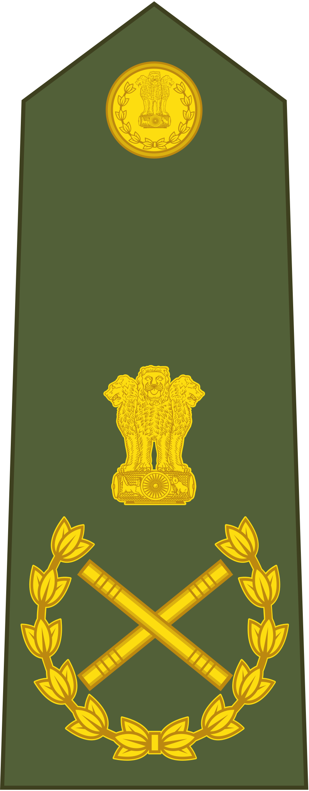 |
| General | Commissioned Officer | 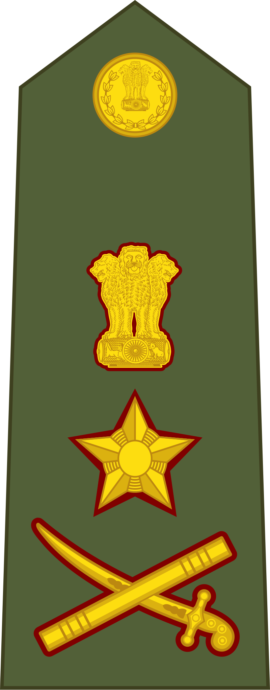 |
| Lieutenant General | Commissioned Officer | 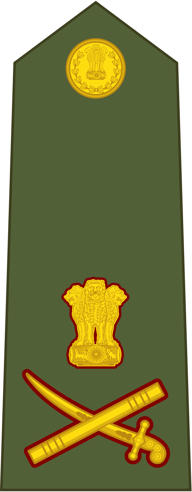 |
| Major General | Commissioned Officer | 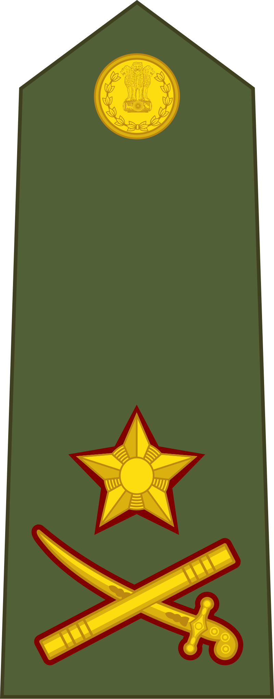 |
| Brigadier | Commissioned Officer | 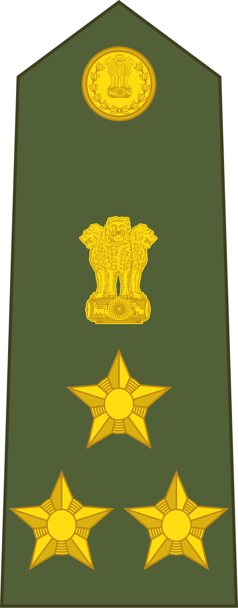 |
| Colonel | Commissioned Officer | 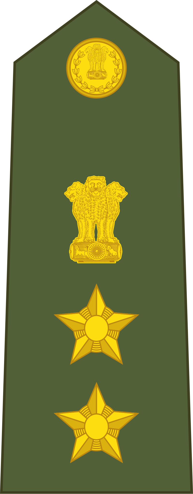 |
| Lieutenant Colonel | Commissioned Officer | 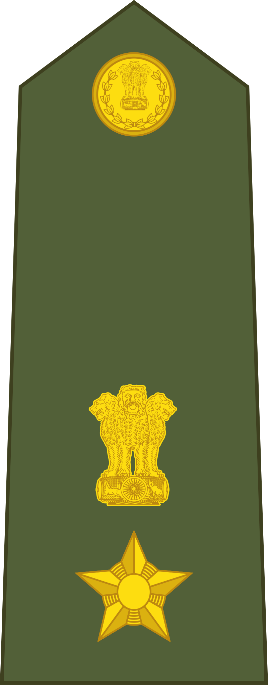 |
| Major | Commissioned Officer | 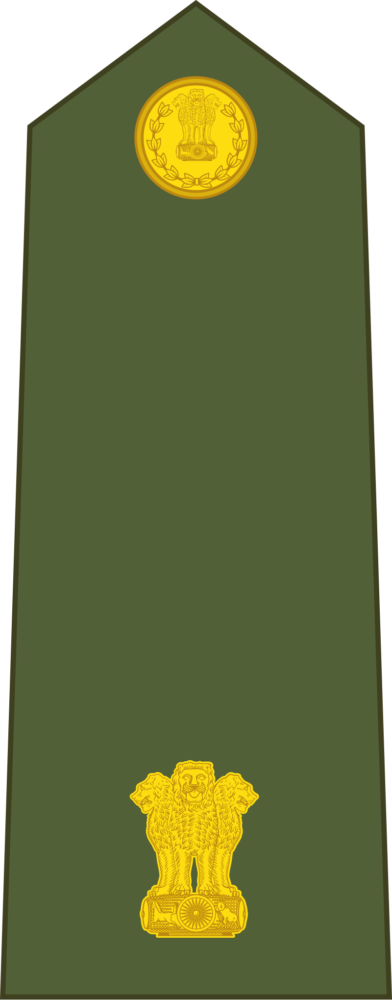 |
| Captain | Commissioned Officer | 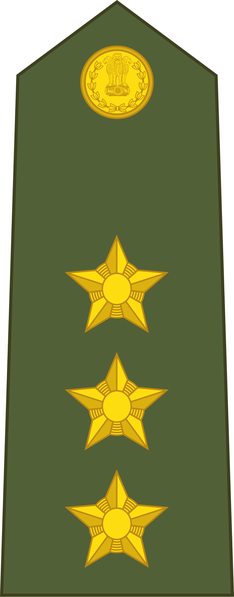 |
| Lieutenant | Commissioned Officer | 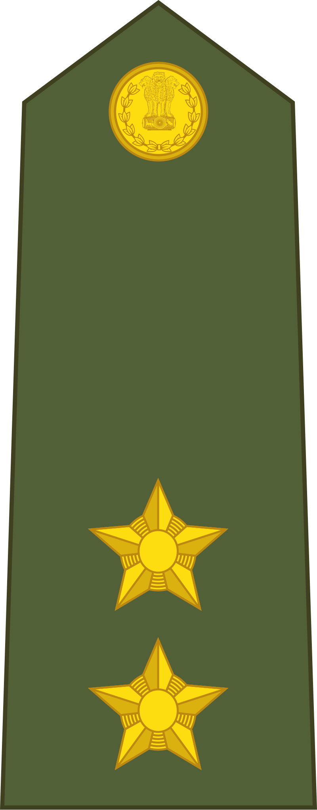 |
| Subedar Major | Junior Commissioned Officer | 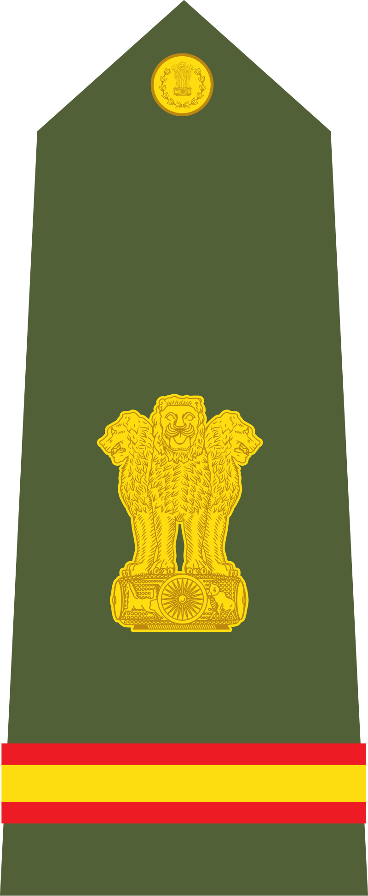 |
| Subedar | Junior Commissioned Officer | 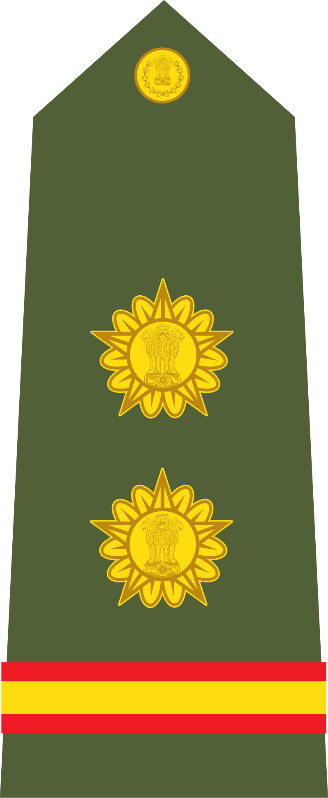 |
| Naib Subedar | Junior Commissioned Officer | 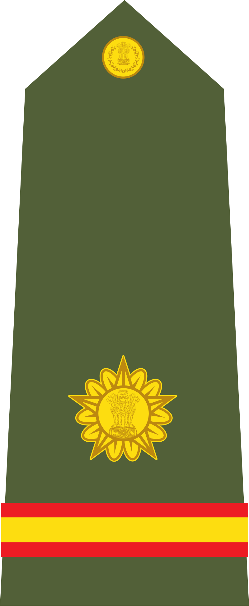 |
| Havildar | Non-Commissioned Officer | 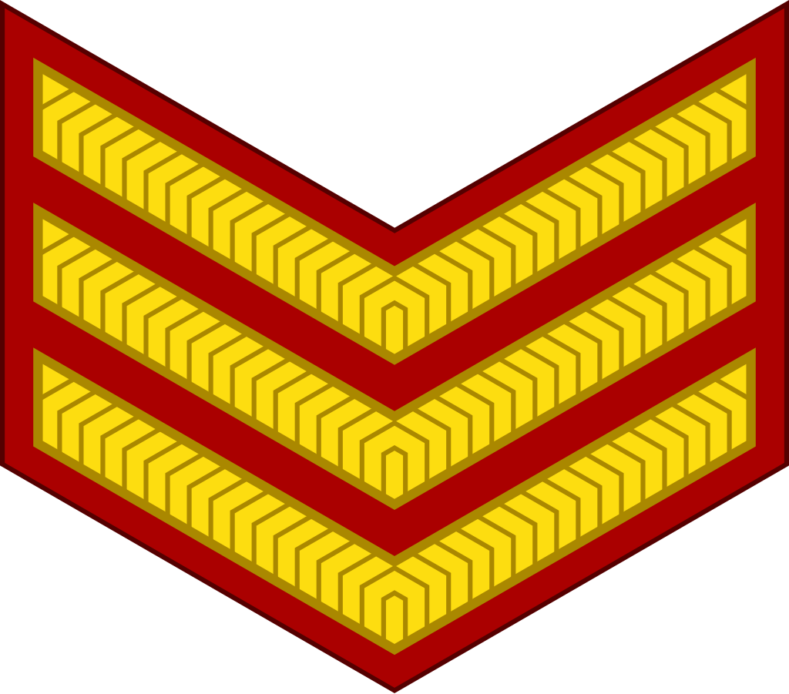 |
| Lance Naik | Non-Commissioned Officer | 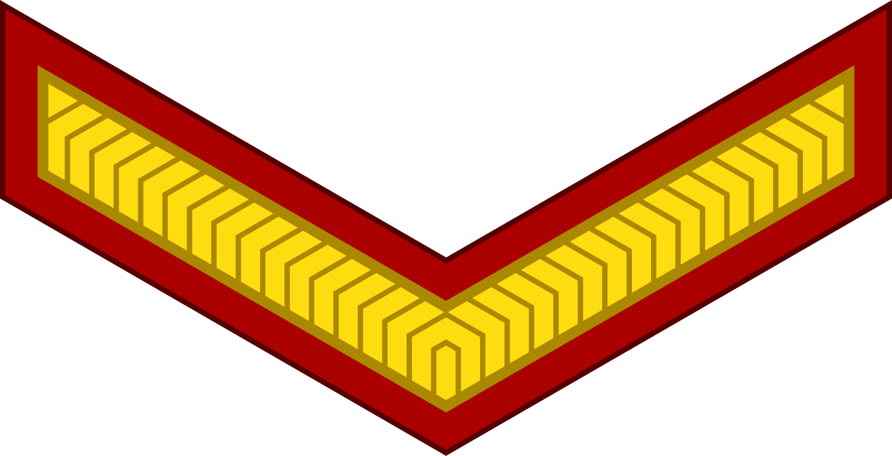 |
| Naik | Non-Commissioned Officer | 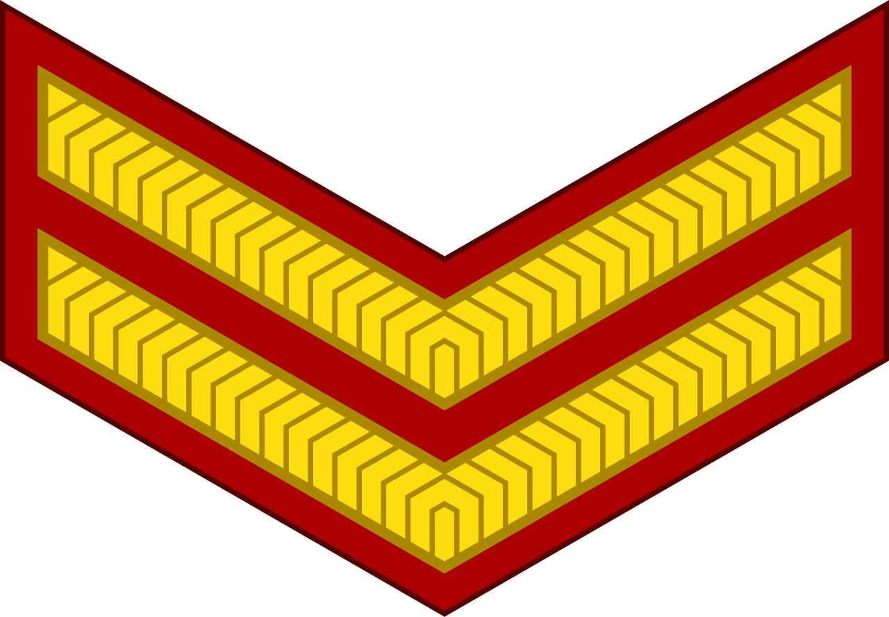 |
| Sepoy | Enlisted Personnel |
Commissioned Officers in the Indian Army are responsible for leading and commanding troops. They undergo extensive training and play key roles in military operations.
JCOs play a vital role in bridging the gap between officers and soldiers. They have leadership responsibilities and also provide technical expertise within the army.
NCOs are the backbone of the army, overseeing discipline, training, and the welfare of soldiers. They hold positions of responsibility and lead smaller units.